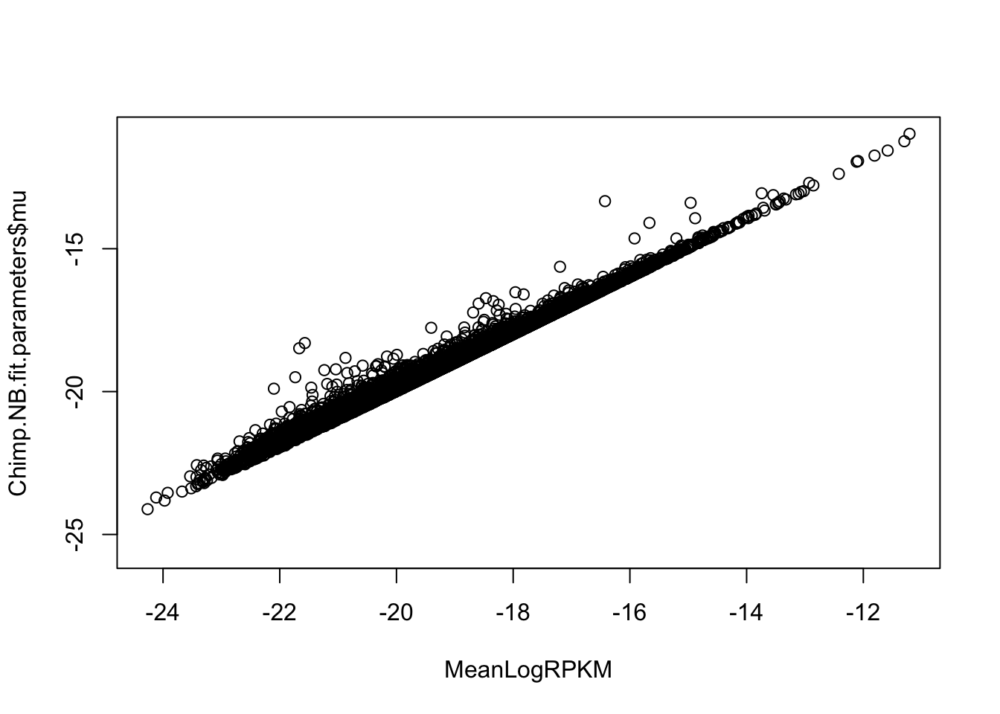
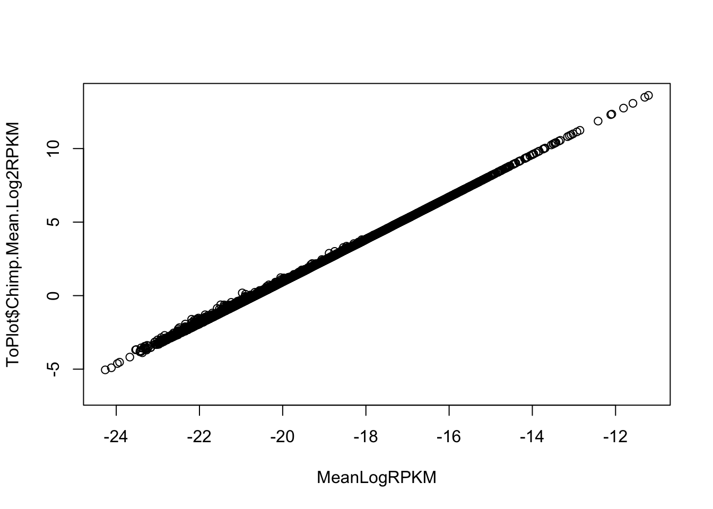
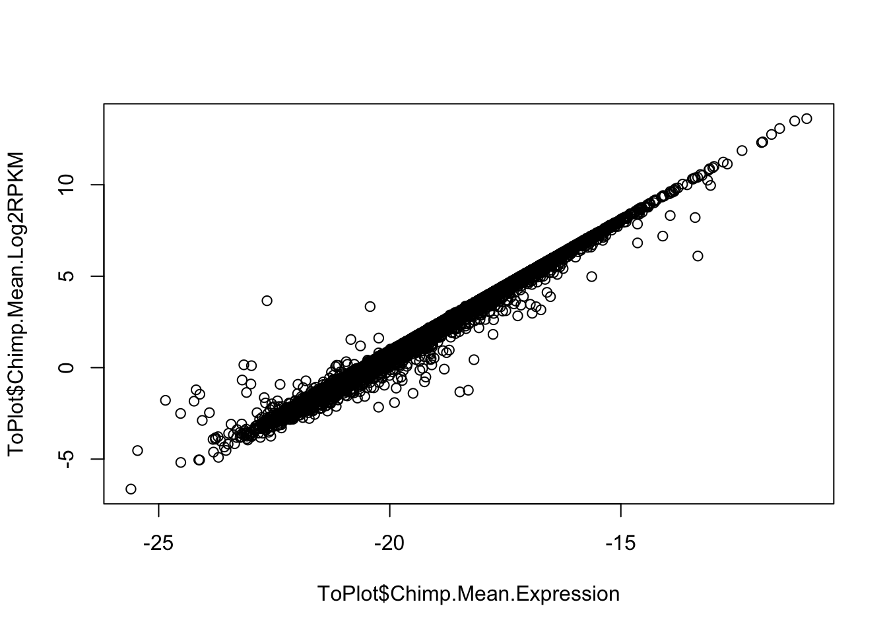
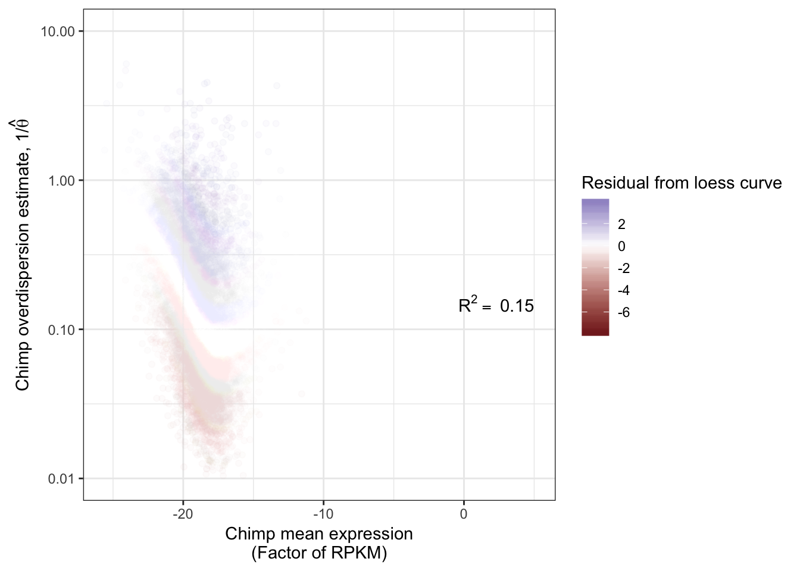
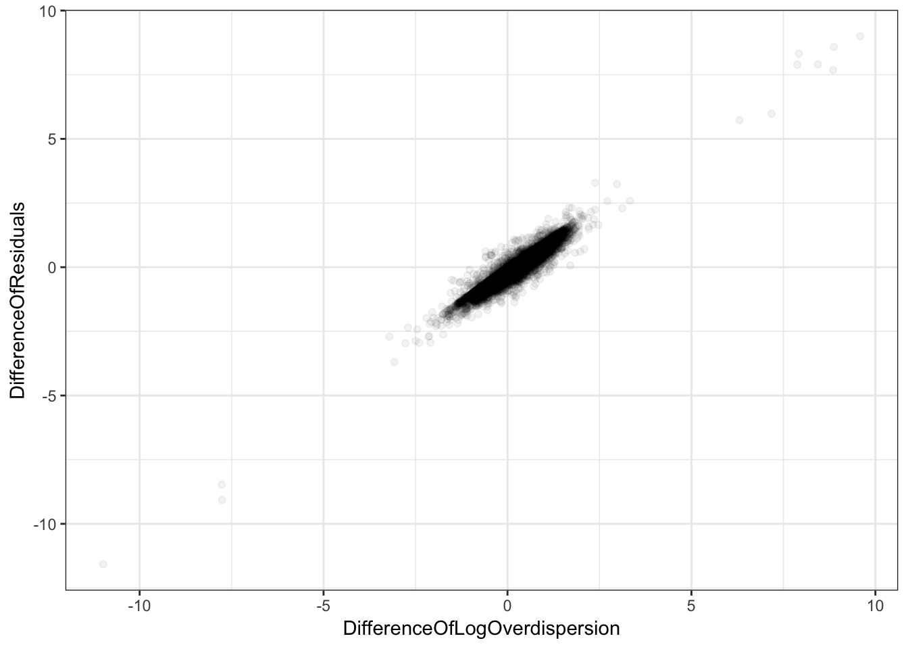
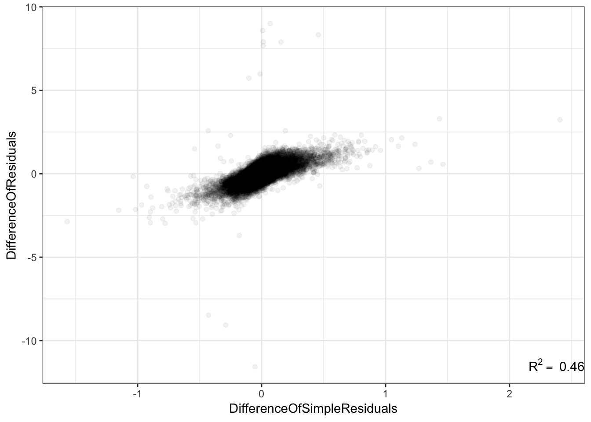

20190919_Overdispersion
Ben Fair
9/19/2019
Last updated: 2019-09-20
Checks: 6 1
Knit directory: Comparative_eQTL/analysis/
This reproducible R Markdown analysis was created with workflowr (version 1.4.0). The Checks tab describes the reproducibility checks that were applied when the results were created. The Past versions tab lists the development history.
The R Markdown is untracked by Git. To know which version of the R Markdown file created these results, you’ll want to first commit it to the Git repo. If you’re still working on the analysis, you can ignore this warning. When you’re finished, you can run wflow_publish to commit the R Markdown file and build the HTML.
Great job! The global environment was empty. Objects defined in the global environment can affect the analysis in your R Markdown file in unknown ways. For reproduciblity it’s best to always run the code in an empty environment.
The command set.seed(20190319) was run prior to running the code in the R Markdown file. Setting a seed ensures that any results that rely on randomness, e.g. subsampling or permutations, are reproducible.
Great job! Recording the operating system, R version, and package versions is critical for reproducibility.
Nice! There were no cached chunks for this analysis, so you can be confident that you successfully produced the results during this run.
Great job! Using relative paths to the files within your workflowr project makes it easier to run your code on other machines.
Great! You are using Git for version control. Tracking code development and connecting the code version to the results is critical for reproducibility. The version displayed above was the version of the Git repository at the time these results were generated.
Note that you need to be careful to ensure that all relevant files for the analysis have been committed to Git prior to generating the results (you can use wflow_publish or wflow_git_commit). workflowr only checks the R Markdown file, but you know if there are other scripts or data files that it depends on. Below is the status of the Git repository when the results were generated:
Ignored files:
Ignored: .DS_Store
Ignored: .Rhistory
Ignored: .Rproj.user/
Ignored: analysis/.DS_Store
Ignored: analysis/20190521_eQTL_CrossSpeciesEnrichment_cache/
Ignored: analysis/figure/
Ignored: analysis_temp/.DS_Store
Ignored: code/.DS_Store
Ignored: code/snakemake_workflow/.DS_Store
Ignored: data/.DS_Store
Ignored: data/PastAnalysesDataToKeep/.DS_Store
Ignored: docs/.DS_Store
Ignored: docs/assets/.DS_Store
Untracked files:
Untracked: analysis/20190919_IsNegBinomialFitCallCorrectingForGeneLengthProperly.Rmd
Untracked: analysis/20190919_Overdispersion.Rmd
Untracked: code/CustomFunctions.R
Untracked: data/GTEx_Analysis_TissueColorCodes.txt
Untracked: data/wgEncodeBroadHmmHsmmHMM.hg19.bed.gz
Untracked: docs/figure/20190913_VarianceFromNB_model_Comparison.Rmd/
Untracked: docs/figure/20190919_Overdispersion.Rmd/
Untracked: output/1000GenesChimpCountTable.tsv
Untracked: output/1000GenesChimpGeneLenths.tsv
Unstaged changes:
Modified: analysis/20190913_VarianceFromNB_model_Comparison.Rmd
Modified: code/snakemake_workflow/Session.vim
Note that any generated files, e.g. HTML, png, CSS, etc., are not included in this status report because it is ok for generated content to have uncommitted changes.
There are no past versions. Publish this analysis with wflow_publish() to start tracking its development.
library(tidyverse)
library(knitr)
library("edgeR")
library(stats)
library(corrplot)
library(gplots)
library("clusterProfiler")
library("org.Hs.eg.db")
library(enrichplot)
library(cowplot)
source("../code/CustomFunctions.R")Pick genes to run overdispersion analysis on… Pick genes that were tested for eGene in both species and in the ortho-exon count table.
HumanSamplesToDrop <- c(c("SRR1507229","SRR603918", "SRR1478149", "SRR598509", "SRR613186"), c("SRR1489693", "SRR598148", "59167", "SRR1478900", "SRR1474730", "61317"))
ChimpSamplesToDrop <- c("Little_R")
CountTableChimpFile <- '../output/PowerAnalysisFullCountTable.Chimp.subread.txt.gz'
CountTableHumanFile <- '../output/PowerAnalysisFullCountTable.Human.subread.txt.gz'
eQTLs <- read.table(gzfile("../data/PastAnalysesDataToKeep/20190521_eQTLs_250kB_10MAF.txt.gz"), header=T)
# List of chimp tested genes
ChimpTestedGenes <- rownames(read.table('../output/ExpressionMatrix.un-normalized.txt.gz', header=T, check.names=FALSE, row.names = 1))
ChimpToHumanGeneMap <- read.table("../data/Biomart_export.Hsap.Ptro.orthologs.txt.gz", header=T, sep='\t', stringsAsFactors = F)
# Of this ortholog list, how many genes are one2one
OneToOneMap <- ChimpToHumanGeneMap %>%
filter(Chimpanzee.homology.type=="ortholog_one2one")
# Read gtex heart egene list
# Only consider those that were tested in both species and are one2one orthologs
GtexHeartEgenes <- read.table("../data/Heart_Left_Ventricle.v7.egenes.txt.gz", header=T, sep='\t', stringsAsFactors = F) %>%
mutate(gene_id_stable = gsub(".\\d+$","",gene_id)) %>%
filter(gene_id_stable %in% OneToOneMap$Gene.stable.ID) %>%
mutate(chimp_id = plyr::mapvalues(gene_id_stable, OneToOneMap$Gene.stable.ID, OneToOneMap$Chimpanzee.gene.stable.ID, warn_missing = F)) %>%
filter(chimp_id %in% ChimpTestedGenes)
EgenesTested <- gsub("\\..+", "", GtexHeartEgenes$gene_id, perl=T)
length(EgenesTested)[1] 11586GenesInDESet <- read.table(gzfile(CountTableChimpFile), header=T, check.names=FALSE, skip=1)$Geneid
length(GenesInDESet)[1] 44125GeneList <- intersect(as.character(GenesInDESet),EgenesTested)Load count tables and calculate overdispersion
CountTables <- GetCountTables(CountTableChimpFile,
CountTableHumanFile,
0, GeneList, ChimpSampleDrop=ChimpSamplesToDrop, HumanSampleDrop = HumanSamplesToDrop)
NumRowsToAnalyze=length(GeneList)
Chimp.NB.fit.parameters<-GetParameterEstimatesOfUnderlyingGamma_lengthAdjusted_FromTable(CountTables$Chimp$Counts[1:NumRowsToAnalyze,], CountTables$Chimp$GeneLengths[1:NumRowsToAnalyze])
Human.NB.fit.parameters<-GetParameterEstimatesOfUnderlyingGamma_lengthAdjusted_FromTable(CountTables$Human$Counts[1:NumRowsToAnalyze,], CountTables$Human$GeneLengths[1:NumRowsToAnalyze])Are overdispersion estimates between species correlated?
ToPlot <- cbind(Chimp.NB.fit.parameters,
apply(CountTables$Chimp$log2RPKM, 1, mean),
Human.NB.fit.parameters,
apply(CountTables$Human$log2RPKM, 1, mean))
colnames(ToPlot) <- c("Chimp.Mean.Expression", "Chimp.Overdispersion", "Chimp.Mean.Log2RPKM", "Human.Mean.Expression", "Human.Overdispersion", "Human.Mean.Log2RPKM")
R<-cor(log(ToPlot$Chimp.Overdispersion),log(ToPlot$Human.Overdispersion), use="complete.obs")
lb1 <- paste("~R^2==~", round(R**2,2))
Overdispersion.Species.Correlation <- ggplot(ToPlot, aes(x=Chimp.Overdispersion, y=Human.Overdispersion)) +
geom_point(alpha=0.05) +
scale_x_continuous(trans='log10', limits=c(1E-2,10), name=expression(paste("Chimp overdispersion estimate, ", "1","/", hat(theta)))) +
scale_y_continuous(trans='log10', limits=c(1E-2,10), name=expression(paste("Human overdispersion estimate, ", "1","/", hat(theta)))) +
annotate("text",x=5,y=0.1, label=lb1, hjust=1, vjust=-1, parse=TRUE) +
theme_bw()Are overdispersion estimates correlated with mean expression?
#Plot mu parameter estimate (estimate of log(mean expression)) vs logRPKM
R<-cor(ToPlot$Chimp.Mean.Expression, ToPlot$Chimp.Mean.Log2RPKM, use="complete.obs")
lb1 <- paste("~R^2==~", round(R**2,2))
ggplot(ToPlot, aes(x=Chimp.Mean.Expression, y=Chimp.Mean.Log2RPKM)) +
geom_point(alpha=0.05) +
# scale_x_continuous(name="Chimp mean expression\n(Factor of RPKM)") +
# scale_y_continuous(trans='log10', limits=c(1E-2,10), name=expression(paste("Human overdispersion estimate, ", "1","/", hat(theta)))) +
annotate("text",x=5,y=0.1, label=lb1, hjust=1, vjust=-1, parse=TRUE) +
theme_bw()
#Plot logRPKM vs calculated manually:
RPM<-t(t(CountTables$Chimp$Counts) / colSums(CountTables$Chimp$Counts))
logRPKM<-log((RPM)/CountTables$Chimp$GeneLengths)
MeanLogRPKM <- apply(logRPKM, 1, mean)
plot(MeanLogRPKM, ToPlot$Chimp.Mean.Log2RPKM)
plot(MeanLogRPKM, ToPlot$Chimp.Mean.Expression)
plot(ToPlot$Chimp.Mean.Expression, ToPlot$Chimp.Mean.Log2RPKM)
Chimp.NB.fit.parameters.CPM<-GetParameterEstimatesOfUnderlyingGamma_lengthAdjusted_FromTable(CountTables$Chimp$Counts[1:NumRowsToAnalyze,], rep(1,NumRowsToAnalyze))
plot(Chimp.NB.fit.parameters.CPM$mu, log(apply(RPM, 1, mean)))
plot(Chimp.NB.fit.parameters.CPM$mu, log(apply(RPM, 1, mean)))#Plot mu parameter estimate between species
R<-cor(ToPlot$Chimp.Mean.Expression, ToPlot$Human.Mean.Expression, use="complete.obs")
lb1 <- paste("~R^2==~", round(R**2,2))
ggplot(ToPlot, aes(x=Chimp.Mean.Expression, y=Human.Mean.Expression)) +
geom_point(alpha=0.05) +
# scale_x_continuous(name="Chimp mean expression\n(Factor of RPKM)") +
# scale_y_continuous(trans='log10', limits=c(1E-2,10), name=expression(paste("Human overdispersion estimate, ", "1","/", hat(theta)))) +
annotate("text",x=Inf,y=-Inf, label=lb1, hjust=1, vjust=-1, parse=TRUE) +
theme_bw()#Plot overdispersion vs mu
R<-cor(ToPlot$Chimp.Mean.Expression, log(ToPlot$Chimp.Overdispersion), use="complete.obs")
lb1 <- paste("~R^2==~", round(R**2,2))
ggplot(ToPlot, aes(x=Chimp.Mean.Expression, y=Chimp.Overdispersion)) +
geom_point(alpha=0.05) +
scale_x_continuous(name="Chimp mean expression\n(Factor of RPKM)") +
scale_y_continuous(trans='log10', limits=c(1E-2,10), name=expression(paste("Chimp overdispersion estimate, ", "1","/", hat(theta)))) +
annotate("text",x=5,y=0.1, label=lb1, hjust=1, vjust=-1, parse=TRUE) +
theme_bw()If I am looking for the difference in overdispersion between species, does it matter whether or not I regress out this mean dependence with a loess curve.
GetLoessResidual <- function(x, y){
loess.fit <- loess(y ~ x)
loess.residual <- y - predict(loess.fit, x)
return(loess.residual)
}
ToPlot$Chimp.Residual <- GetLoessResidual(ToPlot$Chimp.Mean.Expression, log(ToPlot$Chimp.Overdispersion))
R<-cor(ToPlot$Chimp.Mean.Expression, log(ToPlot$Chimp.Overdispersion), use="complete.obs")
lb1 <- paste("~R^2==~", round(R**2,2))
ggplot(ToPlot, aes(x=Chimp.Mean.Expression, y=Chimp.Overdispersion, color=Chimp.Residual)) +
geom_point(alpha=0.05) +
scale_x_continuous(name="Chimp mean expression\n(Factor of RPKM)") +
scale_y_continuous(trans='log10', limits=c(1E-2,10), name=expression(paste("Chimp overdispersion estimate, ", "1","/", hat(theta)))) +
scale_colour_gradient2(name = "Residual from loess curve") +
annotate("text",x=5,y=0.1, label=lb1, hjust=1, vjust=-1, parse=TRUE) +
theme_bw()
ToPlot$Human.Residual <- GetLoessResidual(ToPlot$Human.Mean.Expression, log(ToPlot$Human.Overdispersion))
ToPlot$DifferenceOfResiduals <- ToPlot$Chimp.Residual - ToPlot$Human.Residual
ToPlot$DifferenceOfLogOverdispersion <- log(ToPlot$Chimp.Overdispersion) - log(ToPlot$Human.Overdispersion)
ggplot(ToPlot, aes(x=DifferenceOfLogOverdispersion, y=DifferenceOfResiduals)) +
geom_point(alpha=0.05) +
theme_bw()
write.table(CountTables$Chimp$Counts[1:1000,], file="../output/1000GenesChimpCountTable.tsv", sep='\t', quote=F)
write.table(CountTables$Chimp$GeneLengths[1:1000], file="../output/1000GenesChimpGeneLenths.tsv", sep='\t', quote=F)Conclusion: For purposes of comparing species differences in overdispersion, it makes no difference.
Well I am also curious if it makes any difference to do all this negative binomial fitting, compared the simpler method of finding the residual of the trend between mean(log(RPKM)) and std(log(RPKM)).
ToPlot$Human.SimpleResidual <- GetLoessResidual(ToPlot$Human.Mean.Log2RPKM, sqrt(apply(CountTables$Human$log2RPKM, 1, var)))
ToPlot$Chimp.SimpleResidual <- GetLoessResidual(ToPlot$Chimp.Mean.Log2RPKM, sqrt(apply(CountTables$Chimp$log2RPKM, 1, var)))
ToPlot$DifferenceOfSimpleResiduals <- ToPlot$Chimp.SimpleResidual - ToPlot$Human.SimpleResidual
R<-cor(ToPlot$DifferenceOfSimpleResiduals, ToPlot$DifferenceOfResiduals, use="complete.obs")
lb1 <- paste("~R^2==~", round(R**2,2))
ggplot(ToPlot, aes(x=DifferenceOfSimpleResiduals, y=DifferenceOfResiduals)) +
geom_point(alpha=0.05) +
annotate("text",x=Inf,y=-Inf, label=lb1, hjust=1, vjust=-1, parse=TRUE) +
theme_bw()
Now let’s do with GSEA analysis and see if the same words come up as that both methods
# RankedGeneList<-ToPlot$DifferenceOfSimpleResiduals
# names(RankedGeneList) <- rownames(ToPlot)
# SortedGeneList <- sort(RankedGeneList, decreasing=T)
#
# chimp.high.var.Simple <- gseGO(gene = SortedGeneList,
# OrgDb = org.Hs.eg.db,
# keyType = 'ENSEMBL',
# maxGSSize = 500,
# ont = "BP",
# nPerm = 100000)
# as.data.frame(chimp.high.var.Simple) %>% dplyr::select(Description, p.adjust, enrichmentScore) %>% arrange(enrichmentScore) %>% head(20)
RankedGeneList2<-ToPlot$DifferenceOfLogOverdispersion
names(RankedGeneList2) <- rownames(ToPlot)
SortedGeneList2 <- sort(RankedGeneList2, decreasing=T)
chimp.high.var.Overdispersion <- gseGO(gene = SortedGeneList2,
OrgDb = org.Hs.eg.db,
keyType = 'ENSEMBL',
maxGSSize = 500,
ont = "BP",
nPerm = 100000)
as.data.frame(chimp.high.var.Overdispersion) %>% dplyr::select(Description, p.adjust, enrichmentScore) %>% arrange(enrichmentScore) %>% head(20) Description
1 DNA strand elongation
2 SRP-dependent cotranslational protein targeting to membrane
3 cotranslational protein targeting to membrane
4 establishment of protein localization to endoplasmic reticulum
5 protein localization to endoplasmic reticulum
6 regulation of chromosome segregation
7 mitotic spindle organization
8 mitotic sister chromatid segregation
9 sister chromatid segregation
10 nuclear chromosome segregation
11 chromosome segregation
12 positive regulation of programmed cell death
13 positive regulation of apoptotic process
14 positive regulation of cell death
15 regulation of defense response
16 myeloid cell differentiation
17 positive regulation of cell adhesion
18 cytokine production
19 regulation of cytokine production
20 regulation of cell-cell adhesion
p.adjust enrichmentScore
1 0.030382696 -0.6748732
2 0.042678917 -0.4899624
3 0.027663509 -0.4885324
4 0.027422514 -0.4661413
5 0.011920527 -0.4643751
6 0.025832043 -0.4316608
7 0.028817843 -0.4199969
8 0.032403046 -0.3635242
9 0.028817843 -0.3489121
10 0.039622713 -0.3094772
11 0.049464386 -0.2924877
12 0.041348890 0.3346695
13 0.041348890 0.3351856
14 0.029862002 0.3362084
15 0.011920527 0.3524547
16 0.049464386 0.3590713
17 0.043164891 0.3605040
18 0.004873167 0.3617984
19 0.006751225 0.3633144
20 0.043164891 0.3651909as.data.frame(chimp.high.var.Overdispersion) %>%
dplyr::select(Description, p.adjust, enrichmentScore) %>%
filter(enrichmentScore<0) %>%
arrange(p.adjust) %>%
head(20) Description
1 protein localization to endoplasmic reticulum
2 regulation of chromosome segregation
3 establishment of protein localization to endoplasmic reticulum
4 cotranslational protein targeting to membrane
5 mitotic spindle organization
6 sister chromatid segregation
7 DNA strand elongation
8 mitotic sister chromatid segregation
9 nuclear chromosome segregation
10 SRP-dependent cotranslational protein targeting to membrane
11 chromosome segregation
p.adjust enrichmentScore
1 0.01192053 -0.4643751
2 0.02583204 -0.4316608
3 0.02742251 -0.4661413
4 0.02766351 -0.4885324
5 0.02881784 -0.4199969
6 0.02881784 -0.3489121
7 0.03038270 -0.6748732
8 0.03240305 -0.3635242
9 0.03962271 -0.3094772
10 0.04267892 -0.4899624
11 0.04946439 -0.2924877So either way you measure gene-wise dispersion, the Gene set enrichment for genes that are more dispersed in the chimp population are the generally the same: immune response genes.
Lastly, I am interested in asking what are the overdispersed genes in general. Let’s do another gsea analysis using the average of chimp_overdispersion and human_overdispersion.
RankedGeneListMeanOverdispersion <- (log(ToPlot$Chimp.Overdispersion) + log(ToPlot$Human.Overdispersion))/2
names(RankedGeneListMeanOverdispersion) <- rownames(ToPlot)
SortedGeneListMeanOverdispersion <- sort(RankedGeneListMeanOverdispersion, decreasing=T)
high.Overdispersion <- gseGO(gene = SortedGeneListMeanOverdispersion,
OrgDb = org.Hs.eg.db,
keyType = 'ENSEMBL',
maxGSSize = 500,
ont = "BP",
nPerm = 100000)
high.Overdispersion.simplified <- simplify(high.Overdispersion)
as.data.frame(high.Overdispersion.simplified) %>% dplyr::select(Description, p.adjust, enrichmentScore) %>% arrange(enrichmentScore) %>% head(30) Description
1 positive regulation of RNA polymerase II transcriptional preinitiation complex assembly
2 respiratory chain complex IV assembly
3 maintenance of protein localization in endoplasmic reticulum
4 SNARE complex assembly
5 regulation of viral-induced cytoplasmic pattern recognition receptor signaling pathway
6 negative regulation of proteasomal protein catabolic process
7 autophagosome maturation
8 mitotic G2/M transition checkpoint
9 iron-sulfur cluster assembly
10 metallo-sulfur cluster assembly
11 microtubule anchoring
12 mitochondrial translation
13 mitochondrial translational termination
14 mitochondrial translational elongation
15 translational termination
16 COPII-coated vesicle budding
17 mitochondrial gene expression
18 vesicle targeting, rough ER to cis-Golgi
19 COPII vesicle coating
20 transferrin transport
21 negative regulation of proteolysis involved in cellular protein catabolic process
22 regulation of translational initiation
23 RNA splicing, via transesterification reactions
24 transcription-coupled nucleotide-excision repair
25 G2 DNA damage checkpoint
26 snRNA metabolic process
27 RNA splicing, via transesterification reactions with bulged adenosine as nucleophile
28 mRNA splicing, via spliceosome
29 vesicle coating
30 transcription elongation from RNA polymerase II promoter
p.adjust enrichmentScore
1 0.0114186286 -0.6772255
2 0.0008308334 -0.6599684
3 0.0235453374 -0.6440720
4 0.0226652078 -0.5780372
5 0.0148321265 -0.5766737
6 0.0004597997 -0.5505311
7 0.0184077684 -0.5208283
8 0.0214784592 -0.5135883
9 0.0304103359 -0.5126187
10 0.0304103359 -0.5126187
11 0.0290608819 -0.5093923
12 0.0004597997 -0.4978704
13 0.0004597997 -0.4953524
14 0.0004597997 -0.4951105
15 0.0004597997 -0.4937862
16 0.0004597997 -0.4916910
17 0.0004597997 -0.4836181
18 0.0004597997 -0.4801745
19 0.0004597997 -0.4801745
20 0.0214784592 -0.4784191
21 0.0004597997 -0.4769234
22 0.0004597997 -0.4743882
23 0.0004597997 -0.4740993
24 0.0004597997 -0.4736688
25 0.0416584647 -0.4722063
26 0.0004597997 -0.4711948
27 0.0004597997 -0.4711738
28 0.0004597997 -0.4711738
29 0.0004597997 -0.4700438
30 0.0004597997 -0.4692926Ok now make a nice plot of the results of what genes are more dispersed in humans and which are less:
GSEA.overdispersion.simplified <- simplify(chimp.high.var.Overdispersion)
GSEA.species.overdispersion.plot <- GSEA.overdispersion.simplified %>%
as.data.frame() %>%
dplyr::select(Description, p.adjust, enrichmentScore, setSize) %>%
top_n(20, abs(enrichmentScore)) %>%
ggplot(aes(x=enrichmentScore, y=Description, color=p.adjust, size=setSize)) +
geom_point() +
xlim(c(-1,1)) +
xlab("Enrichment score\nMore overdispered in human<---->More overdispersed in chimp") +
scale_colour_gradient(low="red", high="black") +
labs(color = "Adjusted P-value") +
theme_bw()
Overdispersion.Species.Correlationplot_grid(Overdispersion.Species.Correlation, GSEA.species.overdispersion.plot, labels = c('A', 'B'), label_size = 12, nrow=2)as.data.frame(high.Overdispersion.simplified) %>% dplyr::select(Description, p.adjust, enrichmentScore, setSize) %>% arrange(enrichmentScore) %>%
top_n(20, abs(enrichmentScore)) %>%
ggplot(aes(x=enrichmentScore, y=Description, color=p.adjust, size=setSize)) +
geom_point() +
xlim(c(-1,1)) +
xlab("Enrichment score\nMore overdispered in human<---->More overdispersed in chimp") +
scale_colour_gradient(low="red", high="black") +
labs(color = "Adjusted P-value") +
scale_y_discrete(labels = function(x) lapply(strwrap(x, width = 60, simplify = FALSE), paste, collapse="\n")) +
theme_bw()
sessionInfo()R version 3.5.1 (2018-07-02)
Platform: x86_64-apple-darwin15.6.0 (64-bit)
Running under: macOS 10.14
Matrix products: default
BLAS: /Library/Frameworks/R.framework/Versions/3.5/Resources/lib/libRblas.0.dylib
LAPACK: /Library/Frameworks/R.framework/Versions/3.5/Resources/lib/libRlapack.dylib
locale:
[1] en_US.UTF-8/en_US.UTF-8/en_US.UTF-8/C/en_US.UTF-8/en_US.UTF-8
attached base packages:
[1] parallel stats4 stats graphics grDevices utils datasets
[8] methods base
other attached packages:
[1] MASS_7.3-51.4 cowplot_0.9.4 enrichplot_1.2.0
[4] org.Hs.eg.db_3.7.0 AnnotationDbi_1.44.0 IRanges_2.16.0
[7] S4Vectors_0.20.1 Biobase_2.42.0 BiocGenerics_0.28.0
[10] clusterProfiler_3.10.1 gplots_3.0.1.1 corrplot_0.84
[13] edgeR_3.24.3 limma_3.38.3 knitr_1.23
[16] forcats_0.4.0 stringr_1.4.0 dplyr_0.8.1
[19] purrr_0.3.2 readr_1.3.1 tidyr_0.8.3
[22] tibble_2.1.3 ggplot2_3.1.1 tidyverse_1.2.1
loaded via a namespace (and not attached):
[1] fgsea_1.8.0 colorspace_1.4-1 ggridges_0.5.1
[4] rprojroot_1.3-2 qvalue_2.14.1 fs_1.3.1
[7] rstudioapi_0.10 farver_1.1.0 urltools_1.7.3
[10] ggrepel_0.8.1 bit64_0.9-7 lubridate_1.7.4
[13] xml2_1.2.0 splines_3.5.1 GOSemSim_2.8.0
[16] polyclip_1.10-0 jsonlite_1.6 workflowr_1.4.0
[19] broom_0.5.2 GO.db_3.7.0 ggforce_0.2.2
[22] compiler_3.5.1 httr_1.4.0 rvcheck_0.1.3
[25] backports_1.1.4 assertthat_0.2.1 Matrix_1.2-17
[28] lazyeval_0.2.2 cli_1.1.0 tweenr_1.0.1
[31] htmltools_0.3.6 prettyunits_1.0.2 tools_3.5.1
[34] igraph_1.2.4.1 gtable_0.3.0 glue_1.3.1
[37] reshape2_1.4.3 DO.db_2.9 fastmatch_1.1-0
[40] Rcpp_1.0.1 cellranger_1.1.0 gdata_2.18.0
[43] nlme_3.1-140 ggraph_1.0.2 xfun_0.7
[46] rvest_0.3.4 gtools_3.8.1 DOSE_3.8.2
[49] europepmc_0.3 scales_1.0.0 hms_0.4.2
[52] RColorBrewer_1.1-2 yaml_2.2.0 memoise_1.1.0
[55] gridExtra_2.3 UpSetR_1.4.0 triebeard_0.3.0
[58] stringi_1.4.3 RSQLite_2.1.1 caTools_1.17.1.2
[61] BiocParallel_1.16.6 rlang_0.3.4 pkgconfig_2.0.2
[64] bitops_1.0-6 evaluate_0.14 lattice_0.20-38
[67] labeling_0.3 bit_1.1-14 tidyselect_0.2.5
[70] plyr_1.8.4 magrittr_1.5 R6_2.4.0
[73] generics_0.0.2 DBI_1.0.0 pillar_1.4.1
[76] haven_2.1.0 withr_2.1.2 modelr_0.1.4
[79] crayon_1.3.4 KernSmooth_2.23-15 rmarkdown_1.13
[82] viridis_0.5.1 progress_1.2.2 locfit_1.5-9.1
[85] grid_3.5.1 readxl_1.3.1 data.table_1.12.2
[88] blob_1.1.1 git2r_0.25.2 digest_0.6.19
[91] gridGraphics_0.4-1 munsell_0.5.0 viridisLite_0.3.0
[94] ggplotify_0.0.3